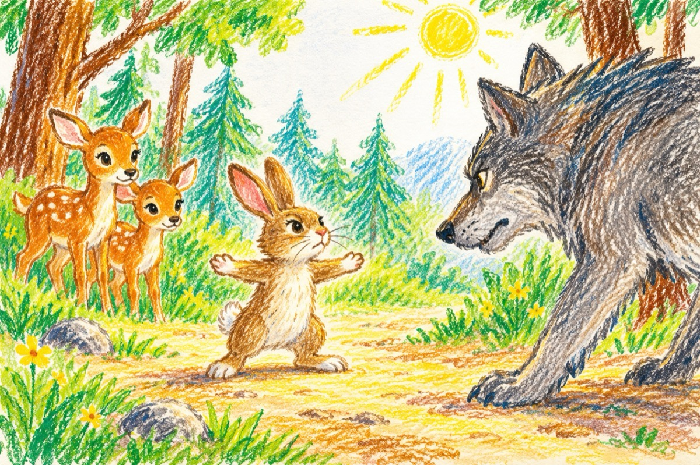

Bravul iepuraș
Zarvă mare în pădure,
Băștinașii schimbă locul.
Ursul pleacă de la mure,
Pupăza-și zbârlește cocul.
Turtureaua și-un sticlete,
Zbenguiala-o lasă baltă.
Ciocârliile vedete.
Trilu-n codru nu-l mai saltă.
Murmură nătâng bursucul,
Presimțimd pericol mare.
Bufnița-și varsă năduful,
P-o biată ciocănitoare!
Vulpea nu mai vrea bârlogul.
Și dă iama-n prepelițe.
Un păianjen cu năvodul,
Prinde zdravăn musculițe.
Grijulie coțofana,
Îmbrăcată-n noul frac,
Tuturor le dă alarma
Pregătindu-i de atac!
Cucul ca să-și facă jocul,
Trâmbițează peste tot
Parcă a venit potopul!...
Zboară negăsindu-și locul
Semănând cu un robot.
Iute ca Hopa Mitică,
Cu fărâma lui de glas,
Plin de milă și de frică,
Iese-n cale-un iepuraș,
Ce își pune-n luptă trupul
Întocmai ca un oștean,
Pentru a-l opri pe lupul
Cel lacom și cel viclean.
Ce alergă-n fuga mare
Acolo sus în poiană,
Unde-s două căprioare,
Nou sosite-n plină toamnă
Vesele și sprinteioare!...
Moș Martin văzând că-i jale,
Veni iute-n ajutor.
-Lupule, nu-mi sta în cale,
Știi că sunt biruitor!...
Nu rânji așa pe nas.
Vezi prea bine că nu-s singur,
Ci-s cu bravul iepuraș!
Pe lup frica îl cuprinse,
Și lingându-se pe bot,
Din pădure o întinse
Cu năravul lui cu tot!...
Vasile Groza